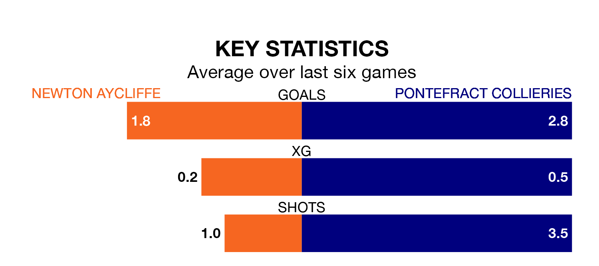

Saturday's match between Newton Aycliffe and Pontefract Collieries promises to be one for the neutrals, as two of the Northern Premier League Division One East's most free-scoring sides go head-to-head.
Ahead of the game, Newton Aycliffe and Pontefract Collieries sit fourth and third in the goal-scoring charts, with 63 and 65 goals respectively.
Pontefract Collieries are fifth in the table after 33 games, of which they have won 17 and drawn nine, earning 60 points.
Newton Aycliffe are two places behind the away team in seventh, with 17 wins and six draws putting them on 57 points.
The hosts are in mixed form in the Northern Premier League Division One East, with two wins and a draw from their last six games.
With four wins and a draw over that period, Pontefract Collieries's form is much better – they have taken 13 points from 18, compared to Newton Aycliffe's seven.
Newton Aycliffe's last match was on April 16, a 5-2 loss against Dunston UTS.
Pontefract Collieries beat Grimsby Borough 6-0 last time out, on April 20.
Updated: 07:59 (UTC), 26/04/24